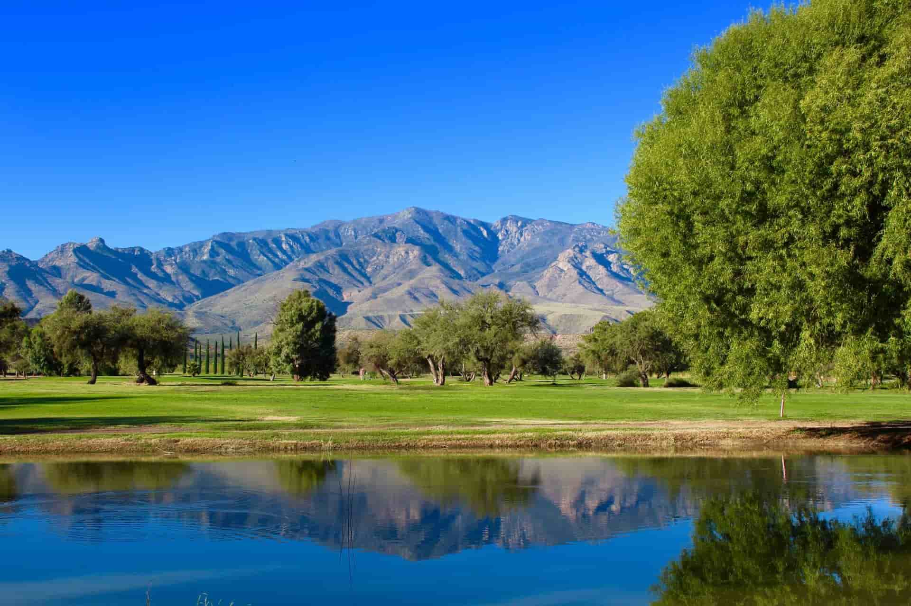

About Us
Thatcher is a town in Graham County, Arizona, United States. According to the 2020 Census, the population of the town is 5,264. It is part of the Safford Micropolitan Statistical Area. Thatcher is the home of Eastern Arizona College, a college that offers two year degrees and includes a nursing school.
History
Thatcher was originally settled by members of The Church of Jesus Christ of Latter-day Saints. The first settler was John M. Moody who arrived in Thatcher with his wife and children in 1881.[10] The founding of Thatcher is attributed to Mormon pioneer Christopher Layton, who bought two thousand acres, named the acreage "Thatcher", divided them into lots, and sold those lots to Mormon settlers. Layton also bought a gristmill and built roads, canals and homes.
Eastern Arizona College traces its history to the St. Joseph Stake Academy started by the church in nearby Central. Central is also the location of the Gila Valley Arizona Temple.
What is Thatcher known for?
Cotton is the principal agricultural commodity. Another major contributor is the copper mining by the Freeport-McMoRan Corporation.
What is there to do?
Stock up on picnic supplies – or, better yet, fill up with great Mexican food in the area’s collection of mom-and-pop restaurants known as the Salsa Trail. Then forget everything you think you know about the desert and head out to the Coronado National Forest surrounding town.
The Thatcher Parks and Recreation Department offers a wide variety of facilities and activities for your enjoyment.
These facilities include five community parks, a splash pad water feature, a skate park, tennis courts, basketball court, sand volleyball and a pickle ball court.
Additionally, the Town offers Summer Baseball, Softball, Women's Volleyball, Jr. League Volleyball, Men's Basketball, Children's Choir, Swim Team, Children's Orchestra, Community Choir, and Basketball & Tennis Camps.